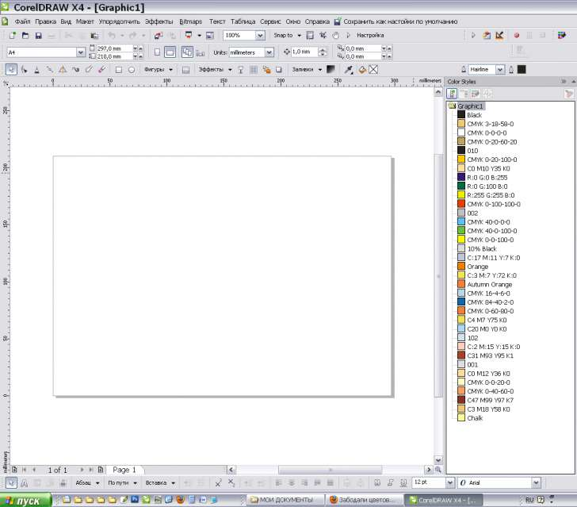

Забодали цветовые стили
Solowejka / 17.01.2013, 15:39
Форум:
Установил на рабочий комп CorelDRAW X4 лицензионный, но не регистрировал.
Поначалу всё было хорошо. Примерно через год цветовые стили попёрли.
Создаю новый документ. То биш чистый лист открыт. Заглядываю в папочку с цветовыми стилями, а там их - целый список!
Что же получается? Если не регистрировал лицензионную программу, соответственно не получал разные там обновления, то цветовые стили сама программа генерирует?
Ха ха, очередная выдумка :D Стили подхватываются из файла где они уже есть, происходит это банально — если нажать кнопку сохранения настроек документа по умолчанию. К тому же в программе есть настройки что именно сохранять в таком случае. Сколько можно то уже мусолить эти стили?
Выдумка? А зачем?

Я про это: